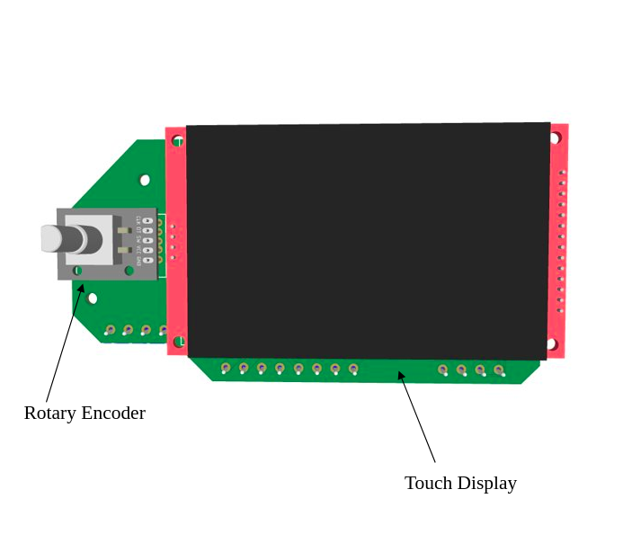
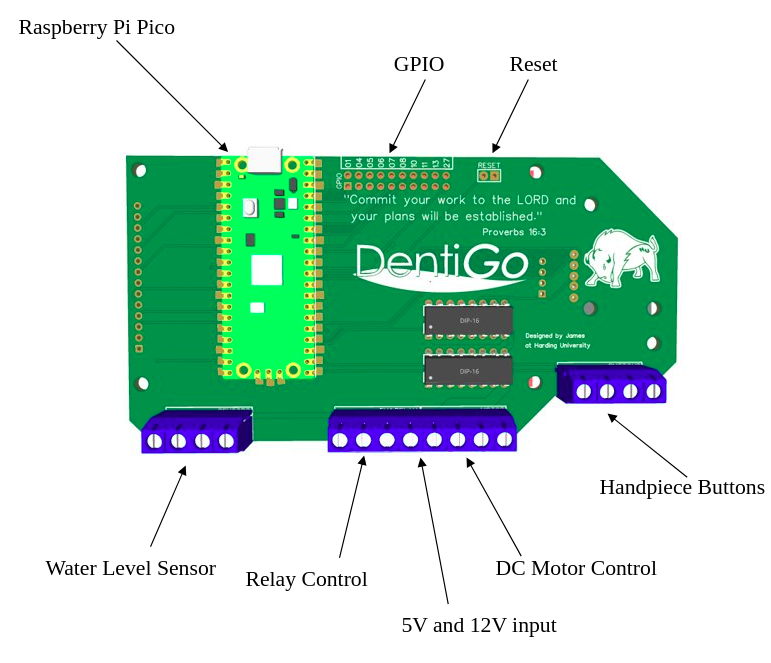
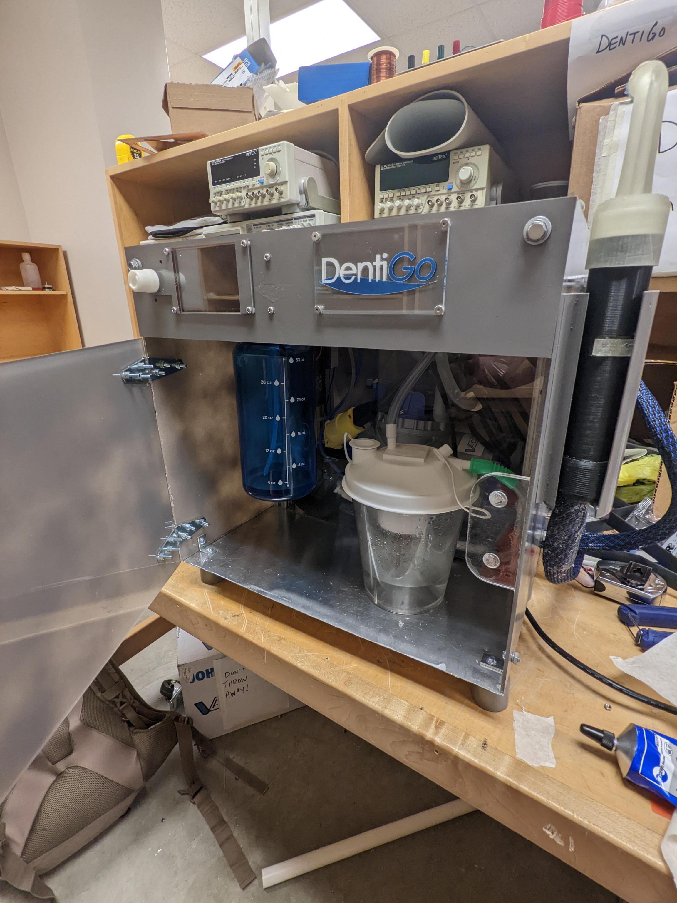
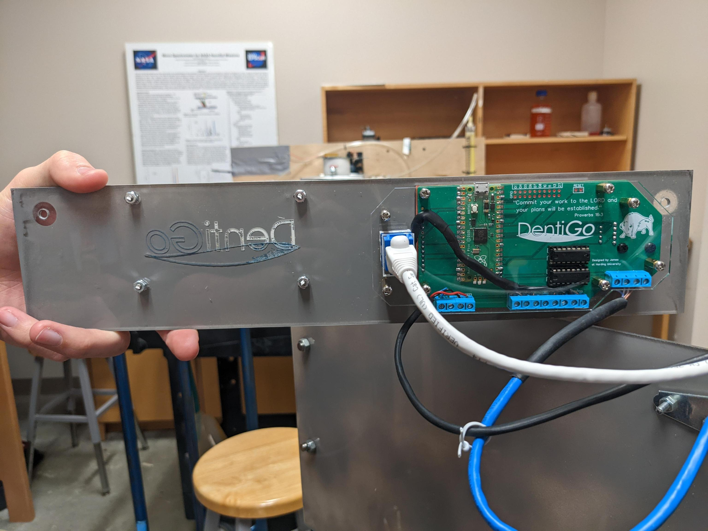

About Me
I'm passionate about Engineering Design and my faith. I am willing to help or lead when needed and to put in the effort to get things done well. In high school I was an officer in FFA, FBLA, STEM Club, BETA Club, and the trapshooting team. I graduated salutatorian and then came to Harding University in Searcy, Arkansas. (an ABET accredited private Christian University)
During my time there I learned a lot of things about engineering, relationships, personal-finance, and life in general. I learned the most about engineering in my senior design class my final year there. I learned that its important to be confident, self-motivated, and failure is part of the process.
Skills
NASA Intern -NASA Student Intensive Training Program
Arkansas Space Grant Consortium (7 people)
Project:Designing and testing a 3D printed ABS and paraffin wax fuel cell.
Job:Assisting in the programming and wiring of sensors used to collect thrust data
Engineering Senior Design -Harding University
Project:Portable Dentistry device with variable water jet, suction, and brushing functions in a single handpiece.
Objective:To design a control system incorporating a custom printed circuit board with a touch display, knob, buttons, microcontroller, water level sensor, AC motor control, and DC motor control.
DormNet Assistant -Harding University DormNet
Job:Troubleshoot and fix all software based issues on student computers and other IOT devices that contact the DormNet office.
Promoted to Senior DormNet Assistant(Summer 2021) to train and lead other DormNet Assistants.
B.S. Computer Engineer -Harding Uniersity
Projects:
H.S. Diploma -Waldron High School
Clubs:FFA, FBLA, BETA, Science Club, Trapshooting
Projects: Thermal Electric Powered Flashlight, DIY telescope, Dog Phenotype Pedigree
Recent Work
DentiGo - Senior Design Project
DentiGo is
Based on the Rapseberry Pi Pico development board for the RP2040 microprocessor. The RP2040 was a great introduction to developing small SMD PCB's as well as parrellel programming on ARM. Research into developing this board was independently lead. But due to some life events, troubleshooting a design/manufacturing error was paused which lead to a redesign of the board.
-    
- Created -04/04/2020
- Technology -HTML
- Role -Developer
- Learn More -www.github.io1
Contact Me
Other Links